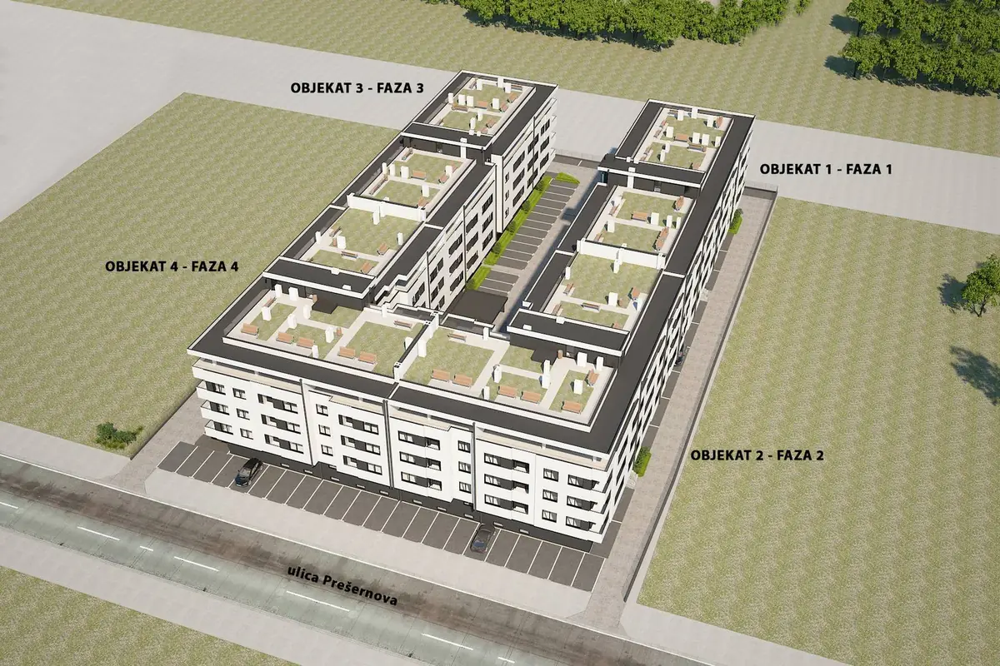

Prešernova 8
Stambeni objekat Pr + 4 na Telepu, prva faza kompleksa Prešernova u Novom Sadu.
O objektu
Prešernova 8 je prva faza novog stambenog kompleksa na Telepu, u mirnom delu Novog Sada blizu prirode. Zgrada ima prizemlje i četiri sprata, 54 stana različitih struktura, dovoljno parking mesta za stanare i uređeno dvorište.
Cene pojedinačnih stanova zavise od sprata, pozicije i kvadrature. U tabeli ispod vidite koji su stanovi trenutno slobodni, a za tačnu ponudu nam se javite.
- 1Objekat 1Prešernova 8, 54 stanaU izgradnji
- 2Objekat 2Druga fazaSledi
- 3Objekat 3Treća fazaSledi
- 4Objekat 4Četvrta fazaSledi

Stanovi u ponudi
Kliknite na stan da vidite detalje i skicu.
Dostupno Rezervisano Prodato
Učitavanje stanova…
Lokacija
Prešernova 8 se nalazi na Telepu, u mirnom stambenom delu Novog Sada, nadomak Šodroša i Dunava. Objekat je okrenut ka Prešernovoj ulici, sa parkingom duž ulične fasade.
Prodajna kancelarija je u Ulici Cirila i Metodija 23, gde vas rado primamo radnim danima od 7:30 do 14:30 h.